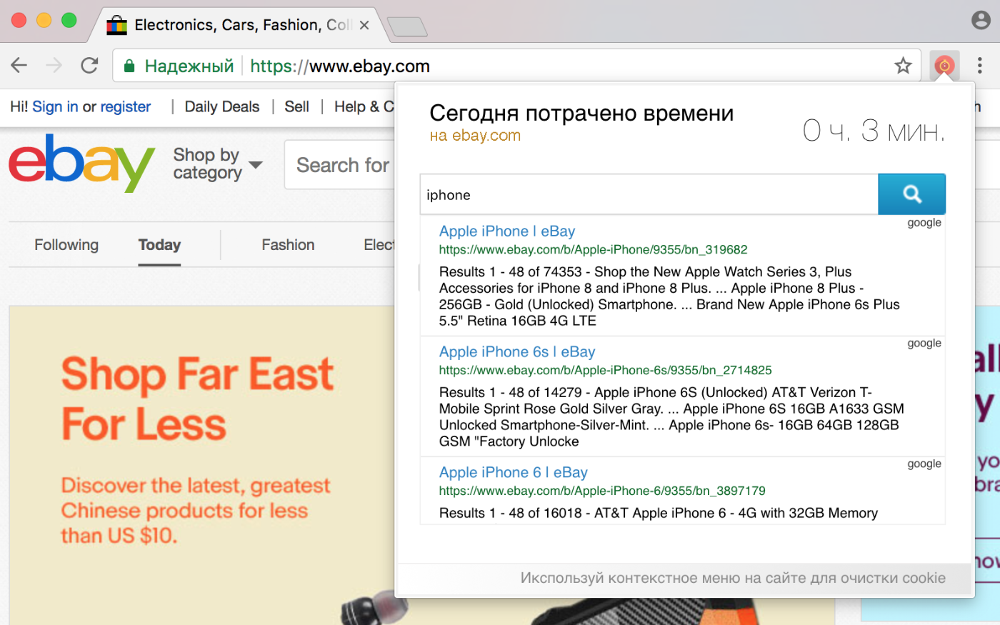
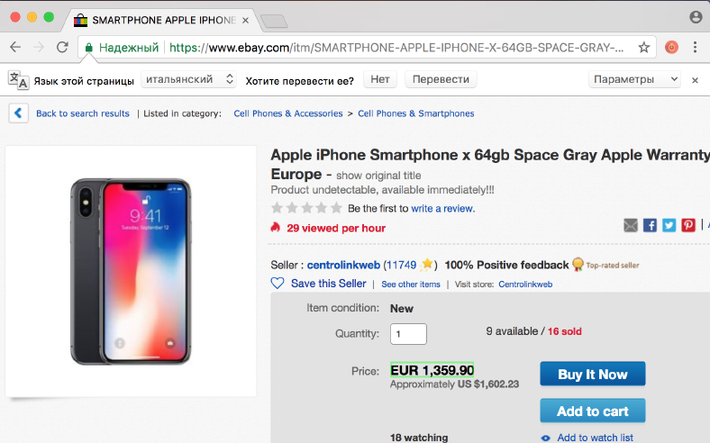
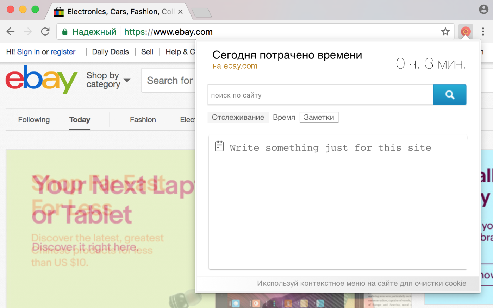

Отслеживай больше, времени трать меньше
Расширение SiteHelper работает с сайтом в активной вкладке, т.е. все действия, которые вы будете делать в расширении будут применяться только на сайт в котором оно было открыто. Это очень удобно, так вы сможете работать в окружении конкретного сайта.
Как этим пользоваться

Поиск по сайту
Через поиск найти страницу на которой находится информация, которую нужно отслеживать.

Отслеживание
Нажать на кнопку "отследить", выбрать блок или текст, который нужно отслеживать.

Заметки
Написать заметку, что бы не забыть что и зачем ...